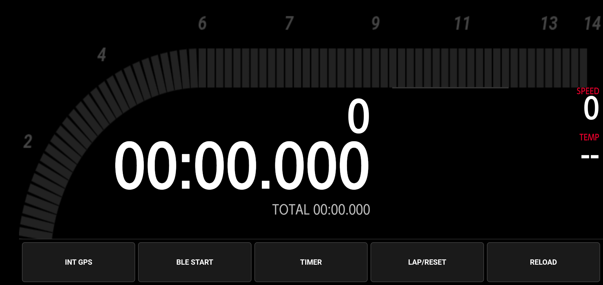
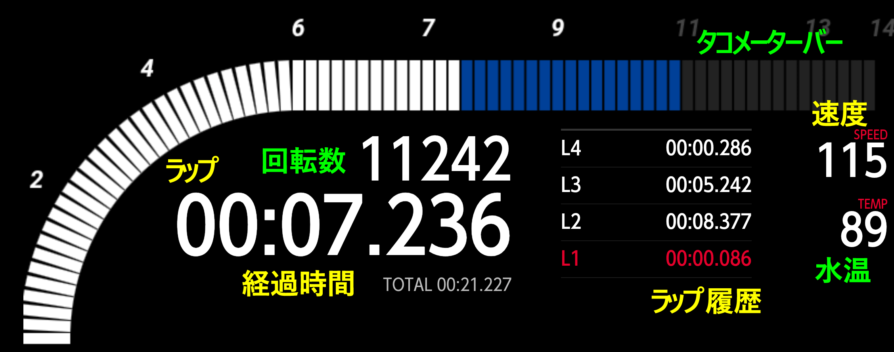

KLAP DEGI GPS マニュアル
ラップ計測 メータ設定 ガイド
1. アプリの概要
KLAP DEGIは、GPSとBluetoothを活用し、サーキット走行のラップタイムをリアルタイムで計測・表示するアプリです。独自のアルゴリズムにより、走行中の集中力を妨げず、必要な情報を瞬時に提供します。
主な機能: ラップタイム計測（自動/手動）、車速 、タコメーター、水温表示（要専用BLEモジュール）。
2. 【内蔵GPS版】の準備と操作
外部レシーバーなしで、スマホのGPSのみを使用して計測する手軽なモデルです。
さらに、外部Bluetooth GNSS用の高頻度ロケーションアプリとBluetooth外部GPSモジュールを使用すれば高精度の計測が期待できます。
推奨ロケーションアプリ Dorroger GPS、Bluetooth外部GPSモジュール (別途お買い求めください）
準備
- スマホの位置情報はONにしてください
- Bluetooth外部GPSモジュール接続にはスマホ設定必要です
- 地図の表示はネットワーク環境が必要です（サーキット選択した場合はネットワーク不要です）
- 外部BluetoothGPSモジュール接続の場合はあらかじめスマホと接続を済ませておいてください
2. 【USB外部GPS版】の準備と操作
高精度な外部GPSレシーバーを使用して、より正確なデータを取得するモデルです。
接続手順
- OTGアダプター経由でGPSレシーバーをスマホに接続。
- 「USB GPS 接続テストと保存」を押す
- 保存成功と表示されれば接続成功です
3. スタート・ゴールライン設定
スタート・ゴールラインの設定をします
- P1ボタン（青）を地図上でタップしスタートライン左に置く
- P2ボタン（赤）を地図上でタップしスタートライン右に置く
- P1,P2のポイント表示をドラッグして微調整できます
- コース進行方向とと直角になるようにラインを設定してください
- 設定後、「スタートラインを決定・保存」を押し、地図左下に表示した 「保存済み：P1:--/P2:--」が「OK」と表示されれば設定成功
4. サーキット設定
スタート・ゴールラインの設定をします
- 「サーキット選択」を押すとリストが表示されます
- サーキットを選択し「サーキットを適用」を押す
- 「●●適用中」と左下に表示後、「スタートラインを決定・保存」を押し、地図左下に表示した 「保存済み：P1:--/P2:--」が「OK」と表示されれば設定成功
- サーキットは随時更新予定
5. 点火パルス
専用のBLEモジュールが必要です
ラップタイマー計測のみではBLEモジュールの接続は不要です
- 「点火パルス数（1回転あたり)」を押すとリストが表示されます
- パルス数を選択し「パルス数を保存」を押す
- 「●パルス/回転」と左下に表示されれば設定成功
6.計測閾値
計測閾値の設定をします
スタートラインからの計測幅の設定になります
GPS更新レート/通過速度から設定してください
青：速度が速すぎる、更新レートが遅い(スマホは１Hｚ前後）
黃：適切
このアプリは計測範囲に入ってから前回の位置情報と現在の位置情報からスタートライン通過を予測し測定します
- 「計測閾値」を押すとリストが表示されます
- 閾値の長さを選択し「閾値を保存」を押す
- 「●●ｍ」と左下に表示されれば設定成功
7.クールダウン設定
スタートライン通過後に計測しない時間を設定します
スタートラインと隣接するコースがある場合、GPSの精度により2重ラップされるのを防ぎます
スタートラインから2重ラップされる恐れのある位置を通過する時間以上に設定してください
クールダウン時間経過前にスタートラインを通過するとラップが空振りします
- 「クールダウン時間」を押すとリストが表示されます
- クールダウン時間を選択し「クールダウンをを保存」を押す
- 「●●秒」と左下に表示されれば設定成功
8.設定初期化
- 「全設定を初期化」を押すと設定数値が初期化されます
9.ラップタイマー起動
- 「ラップタイマー画面へ移動」を押すとラップタイマーに移行します
10. ラップタイマーボタン
ラップタイマーボタン
- REROAD 各種設定を読み込ませます ボタンが橙色の場合未設定項目があります
- INTGPS（GPS版)/USB GPS(USB版） 位置情報取得後 ボタンを押下後位置情報取得されると赤色に変わります
- TIMER 計測開始します GPS計測の場合、ライン通過時15秒間ラップが固定表示されます
- LAP/RESET 手動計測開始します 固定表示はされません
11. ラップタイマー画面
ラップタイマー画面
- ラップ 現在ラップを表示します
- 経過時間 ラップ計測経過してからの経過時間を表示します
- ラップ履歴 ラップ履歴を表示します ベストラップは赤文字で表示します
- 速度 GPSで取得した速度を表示します
- タコメーターバー 回転数をバー表示します
- 回転数 回転数を表示します
- 水温 温度を表示します
緑文字の以下は別途BLEモジュールが必要です
Android用アプリ配布 (GPS版)
KLAP DEGI GPS
Version 1.0.0 | 2026/02/01 更新
アプリをダウンロード
直接ダウンロードしたファイルは「有害なファイルの可能性があります」と警告が出ますが、これは公式ストア以外からのファイル全てに出る警告です。そのまま「ダウンロードを続行」を選択してください。
Android用アプリ配布 (USB版)
KLAP DEGI USB
Version 1.0.0 | 2026/02/01 更新
アプリをダウンロード
直接ダウンロードしたファイルは「有害なファイルの可能性があります」と警告が出ますが、これは公式ストア以外からのファイル全てに出る警告です。そのまま「ダウンロードを続行」を選択してください。
インストール手順
- 「アプリをダウンロード」ボタンをタップ。
- ダウンロード完了後、ファイルを開く。
- セキュリティ警告が出た場合、「設定」を選択。
- 「この提供元のアプリを許可」をONにしてインストール。
推奨機材
 高精度 10Hz GPSレシーバー
高精度 10Hz GPSレシーバー
USB版での使用に最適な動作確認済みモデルです。
※本ページはアフィリエイト広告を利用しています。Amazonアソシエイト・プログラムの参加者です。